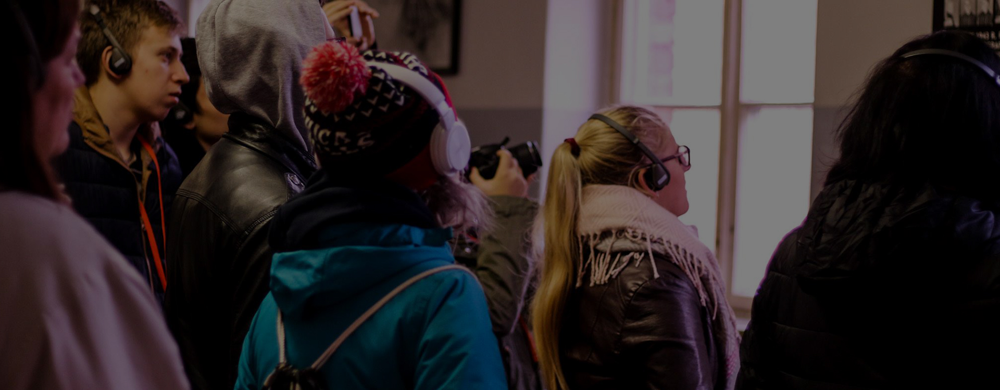

Školský poriadok

Školský poriadok


Študent sa dobrovoľným rozhodnutím študovať na Gymnáziu v Spišskej Novej Vsi, Javorová 16 zaväzuje riadne dochádzať do školy, riadiť sa zásadami všeľudskej morálky, v duchu humanizmu, demokracie, tolerancie a plniť všetky povinnosti, ktoré pre neho vyplývajú zo všeobecne platných nariadení a vnútorného poriadku školy. Gymnázium v Spišskej Novej Vsi, Javorová 16 sa zaväzuje dodržiavať chartu dieťaťa a ľudské práva vo vzťahu k žiakom, profesorom, zamestnancom, rodičom a iným subjektom podieľajúcim sa na výchove a vzdelávaní študentov školy. Vnútorný poriadok školy vychádza z vyšších právnych noriem týkajúcich sa stredných škôl.
1. Študent má právo na vzdelanie, na ktorom sa aktívne a dobrovoľne podieľa.
2. Študent má právo na zrozumiteľný výklad učiva.
3. Študent má právo vysloviť svoj názor slušným spôsobom a nesmie byť za svoj názor nijako postihnutý.
4. Študent má právo na omyl.
5. Študent má práva klásť vyučujúcemu otázky a žiadať odpoveď k téme, ktorá je preberaná na vyučovacej hodine.
6. Študent má právo na objektívne skúšanie a hodnotenie, poznať kritériá hodnotenia, klasifikácie vedomostí a zručností vo všetkých predmetoch. Na bezprostredné oznámenie známky z ústnej odpovede a na zdôvodnenie klasifikácie a zdôvodnenie chýb v písomných prácach a testoch.
7. Študent má právo byť klasifikovaný iba za svoje vedomosti a zručnosti.
8. Študent má právo vedieť, ktoré kapitoly si má zopakovať pri hlásenom opakovaní učiva.
9. Ak sa píš písomná previerka alebo test z učiva za obdobie dlhšie ako 2 týždne, má študent právo byť o tom včas informovaný, aby si zopakoval učivo.
10. V priebehu jedného vyučovacieho dňa môžu študenti písať najviac dve písomné práce trvajúce celú vyučovaciu hodinu.
11. Študent má právo v odôvodnených prípadoch požiadať prostredníctvom svojich rodičov o komisionálne preskúšanie.
12. Študent má právo vybrať si povinne voliteľné a nepovinné predmety z ponuky školy.
13. Študent má právo na oddych počas prestávok.
14. Študent má právo voliť a byť volený do študentskej rady.
15. Študentská rada má právo vhodným spôsobom predkladať návrhy, žiadosti a sťažnosti študentov riaditeľstvu školy alebo pedagogickej rade.
16. Študent má právo byť informovaný o službách pedagogicko-psychologickej poradne a možnostiach štúdia na VŠ.
17. Študent má právo zúčastniť sa na zasadnutiach rodičovských združení.
18. Študenti majú právo organizovať akcie pre svojich spolužiakov ak predložia písomne návrh zabezpečenia akcie, ktorý obsahuje názov, náplň, program, služby, personálnu zodpovednosť a pedagogický dozor, po odsúhlasení riaditeľom školy.
19. Študent má právo zapojiť sa do niektorých z foriem záujmovej činnosti.
20. Študent má právo na komunikáciu s profesormi v duchu zásad humanity, demokracie, tolerancie.
21. Študent má právo obrátiť sa na riaditeľa školy, ak sa domnieva, že došlo k porušeniu jeho práv.
22. Študent má právo voliť a byť volený do triednej samosprávy.
23. Študenti majú právo mať zástupcov v stravovacej komisii.
24. Na žiadosť študentov, u neplnoletých so súhlasom rodiča alebo zákonného zástupcu, umožní riaditeľ školy mimoriadne nadaným a talentovaným študentom prípravu a vykonanie skúšok podľa individuálneho študijného plánu.
Výchovnými opatreniami sú pochvaly a iné ocenenia a opatrenia na posilnenie disciplíny študentov.
1. Pochvalu alebo iné ocenenie udeľuje študentom:
a. triedny učiteľ: za výborný prospech (vyznamenanie) a vzornú dochádzku (do 10 ospravedlnených hodín)
b. riaditeľ školy: za absolútne vyznamenanie (priemer 1.00) a vzornú dochádzku, za reprezentáciu školy (1. miesto v okresnom kole, 1.-3. miesto v krajskom a celoštátnom kole)
2. Opatrenia na posilnenie disciplíny:
Napomenutie triednym profesorom sa udeľuje za menej závažný priestupok voči školskému poriadku. Triedny profesor prejedná výchovné opatrenie so študentom. POKARHANIE triednym profesorom sa udeľuje po predchádzajúcom prerokovaní pedagogickou radou za závažný priestupok alebo opakované menej závažné priestupky voči školskému poriadku. Triedny profesor prejedná výchovné opatrenia pred rokovaním pedagogickej rady študentom a jeho rodičmi. POKARHANIE riaditeľom školy sa udeľuje po predchádzajúcom prerokovaní pedagogickou radou a za opakované závažné priestupky (po predchádzajúcom napomínaní triednym profesorom) alebo za hrubé porušenie školského poriadku. Riaditeľ školy prejedná výchovné opatrenie pred rokovaním pedagogickej rady s triednym profesorom, so študentom a jeho rodičmi. Pokarhanie riaditeľa školy je spravidla spojené so zníženou známkou zo správania na stupeň 2, je urobený zápis do triedneho katalógu a na vysvedčenie.
3. Pokarhanie a zníženú známku zo správania na stupeň:
a. 2 – uspokojivé: 7 – 14 neospravedlnených hodín fajčenie, požívanie alkoholu, omamných a psychotropných látok v priestoroch školy a na školských akciách 3 – 5 menších priestupkov (nedisciplinovanosť, vyrušovanie na hodinách, nerešpektovanie pokynov vyučujúcich a neskoré príchody na vyučovanie, neskoré ospravedlňovanie absencií, používanie mobilného telefónu na vyučovacích hodinách a pod.). l závažnejší priestupok (ohrozujúci zdravie a bezpečnosť spolužiakov a pod.) Opustenie areálu školy bez súhlasu pedagogického pracovníka (triedny učiteľ, zástupca školy, vyučujúci).
b. 3 – menej uspokojivé: 15–28 neospravedlnených hodín viac ako 5 menších priestupkov opakujúce sa vážnejšie priestupky.
c. 4 – neuspokojivé: 29 – 42 neospravedlnených hodín závažné porušenie školského poriadku.
d. vylúčenie zo školy: usvedčenie z krádeže falšovanie dokladov viac ako 43 neospravedlnených hodín, opakované porušenie školského poriadku v skúšobnej lehote určenej riaditeľom školy.
4. Jedna neospravedlnená hodina bude udelená študentovi, ktorý z neopodstatnených dôvodov trikrát meškal na vyučovanie.
5. Výchovné opatrenia uvedené v odseku 3 sa môžu ukladať do dvoch mesiacov odo dňa, keď sa o previnení študenta dozvedel príslušný pedagogický pracovník školy, najneskôr však do jedného roka odo dňa, keď sa študent previnenia dopustil.
6. V rozhodnutí o podmienečnom vylúčení zo štúdia určí riaditeľ školy skúšobnú lehotu a to najdlhšie na jeden rok. Ak sa podmienečne vylúčený študent v tejto lehote osvedčil, upustí sa od vylúčenia. Ak sa študent v tejto lehote dopustí ďalšieho závažného previnenia, riaditeľ školy študenta vylúči zo štúdia.
7. Pri udeľovaní výchovných opatrení a klasifikácií správania každý prípad individuálne posúdi pedagogická rada. Triedny profesor alebo riaditeľ školy prejedná priestupok pred rokovaním pedagogickej rady so študentom a jeho rodičmi.
8. Výchovné opatrenia udelené neplnoletým študentom oznámi riaditeľ školy ich zákonným zástupcom.
1. Vyžaduje sa, aby študent mal v predmete minimálne jednu známku za každý štvrťrok.
2. V prípade, že študent nemá dostatočný počet známok (jednu za štvrťrok) a nie je možné ho vyskúšať v riadnom termíne pre zlú dochádzku a dôvody jeho zlej dochádzky sú podľa vyučujúceho na strane študenta, profesor študenta neklasifikuje. Riaditeľ školy určí na jeho vyskúšanie a klasifikovanie náhradný termín tak, aby klasifikácia mohla byť ukončená najneskôr do dvoch mesiacov po skončení daného klasifikačného obdobia.
3. V prípade, že študent nemá dostatočný počet známok (jednu za štvrťrok) a nie je možné ho vyskúšať v riadnom termíne pre zlú dochádzku a dôvody zlej dochádzky sú podľa názoru vyučujúceho objektívne (napr. zlý zdravotný stav študenta) vyučujúci sa snaží o uzavretie klasifikácie. Vo výnimočných prípadoch (vysoký počet zameškaných hodín, nemožnosť študenta vyskúšať) vyučujúci študenta neklasifikuje. Riaditeľ školy určí na jeho vyskúšanie a klasifikovanie náhradný termín tak, aby klasifikácia mohla byť ukončená najneskôr do dvoch mesiacov po skončení daného klasifikačného obdobia.
4. Komisionálne skúšky sa konajú podľa Vyhlášky o stredných školách 3. časť § 18.
5. V prípade, že študent má na konci klasifikačného obdobia nedostatočný prospech najviac z dvoch predmetov, môže so súhlasom riaditeľa školy robiť z nich opravnú skúšku. Opravné skúšky sa konajú podľa Vyhlášky o stredných školách 3. časť § 17.
6.Ak má plnoletý študent alebo zákonný zástupca neplnoletého študenta pochybnosti o správnosti klasifikácie na konci klasifikačného obdobia, môže do troch dní odo dňa, keď sa dozvedeli o výsledku klasifikácie požiadať riaditeľa školy o komisionálnu skúšku.
Komisionálne preskúšanie nemožno žiadať v prípade, ak študent v príslušnom klasifikačnom období už bol komisionálne preskúšaný. Riaditeľ školy nariadi komisionálne preskúšanie iba v prípade, ak sa presvedčí, že vyučujúci porušil klasifikačný poriadok. Termín komisionálnej skúšky riaditeľ školy určí najneskôr týždeň po ukončení príslušného polroka. 7. Na triednych rodičovských združeniach nie je prípustné menovite hodnotiť prospech a správanie konkrétneho študenta, nechať kolovať po triede klasifikačný hárok. Hodnotenie študijných výsledkov a správania môže vykonať za celú triedu, za jednotlivý predmet iba vo všeobecnej rovine.
hodín a zúčastňovať sa na vyučovaní všetkých povinných, voliteľných a nepovinných vyučovacích predmetoch.
2. Na vyučovanie voliteľných predmetov sa študent prihlasuje v priebehu druhého polroka predchádzajúce školského roka. Po odsúhlasení skupín voliteľných predmetov riaditeľom školy do 31. mája je možné meniť predmet len z vážnych dôvodov a študent je povinný zvolené predmety navštevovať.
3. Neospravedlnený oneskorený príchod študenta na vyučovanie sa klasifikuje ako priestupok, za ktorý vyvodí triedny profesor príslušné dôsledky.
4. Do školy a na mimoškolské akcie prichádza študent v primeranom oblečení, čisto a vkusne upravený.
5. Po príchode do školy je študent povinný sa prezuť do vhodnej nie športovej obuvi z hygienických dôvodov. Obuv, v ktorej prišiel do školy si odkladá do pridelenej skrinky. Táto musí byť z bezpečnostných dôvodov uzamknutá po celý deň.
6. Do školy študent prináša učebnice a školské potreby podľa rozvrhu hodín a pokynov vyučujúcich. Pred hodinou si pripraví všetko čo bude na príslušnom predmete potrebovať.
7.Pred začiatkom vyučovacej hodiny študent zaujme miesto určené zasadacím alebo iným poriadkom, prípadne vyučujúcim.
8. V priebehu vyučovania sa môže vzdialiť z vyučovacej hodiny len so súhlasom vyučujúceho.
9. Študent je povinný v škole vykonávať činnosti určené vyučujúcimi.
10. Keď sa študent z vážnych dôvodov nepripraví na vyučovanie alebo si nevypracuje domácu úlohu, ospravedlní sa príslušnému vyučujúcemu na začiatku hodiny. Učivo si osvojí a úlohy dodatočne splní podľa pokynov vyučujúceho.
11. Všetci študenti sú povinní dôsledne dodržiavať hygienické zásady a nosiť hygienické potreby.
12. Na cvičenia a laboratórne práce chodia oblečení v bavlnených plášťoch označených menom študenta. Plášte udržiavajú v čistote.
13. Do odborných učební, laboratórií a telocvične vstupujú študenti pod vedením vyučujúceho a správajú sa podľa osobitných pokynov.
14. Na vyučovaní, pri praktických prácach (laboratórnych prácach a praktických cvičeniach), školských akciách študent dodržiava zásady bezpečnosti a ochrany zdravia pri práci a protipožiarne opatrenia.
15. V učebniach, školských a verejných priestoroch dodržiava študent čistotu a udržiava poriadok. Vlastným pričinením pomáha utvárať vhodné pracovné a životné prostredie. Po skončení vyučovania f prekontroluje, či po sebe zanechal poriadok a čisto, uprace policu svojej lavice a vyloží stoličku na lavicu.
16. Počas prestávok študent oddychuje, pripravuje sa na ďalšiu hodinu, neobťažuje svojich spolužiakov neprístojným správaním.
17. Pri presune do odborných učební si študenti so sebou zoberú potrebné veci a triedu musia uzamknúť. Škola nezodpovedá za straty vecí z neuzamknutých tried.
18. Študent šetrne zaobchádza so svojimi vecami a vecami spolužiakov. Šetrí učebnice, učebné pomôcky, vypožičané predmety, školskú budovu a ostatný majetok. Škody na inventári a zariadení školy spôsobené úmyselne alebo z nedbanlivosti nahradí študent alebo jeho zákonný zástupca.
19. Pobyt študentov v budove školy je dovolený len v dobe vyučovania alebo záujmovej činnosti. Počas voľných hodín sa môžu študenti zdržiavať vo svojej triede.
20. Na školských exkurziách, zájazdoch, výletoch, vychádzkach cvičeniach OČAP a ostatných zamestnaniach sa riadia pokynmi pedagógov. Bez ich vedomia sa nevzďaľujú od ostatných spolužiakov alebo z určeného miesta.
21. Študent je povinný požiadať riaditeľa školy o oslobodenie od telesnej výchovy ak má vážne zdravotné problémy. Riaditeľ školy rozhodne o oslobodení študenta od telesnej výchovy na základe návrhu lekára a žiadosti rodičov.
22. V jedálni školy sa správa študent disciplinovane, dodržiava pokyny vedúcej jedálne pri objednávaní a odhlasovaní sa zo stravy. V školskej jedálni dodržiava určený poriadok a pri jedle dbá o kultúru stravovania. Do jedálne je zakázaný vstup študentom, ktorí nie sú prihlásení na stravovanie.
23. O prospechu a správaní študenta sa môže jeho rodič alebo zákonný zástupca priebežne informovať u triedneho profesora. Ak došlo v prospechu alebo v správaní študenta k zhoršeniu, oznámi triedny profesor túto skutočnosť rodičom alebo zákonnému zástupcovi študenta písomne.
24. Ak sa u študenta počas vyučovania vyskytnú zdravotné ťažkosti alebo nevoľnosť, oznámi to Vyučujúcemu a ten podľa povahy ochorenia zabezpečí doprovod študenta k lekárovi alebo domov.
25. Ak pri plnení školských povinností vznikne úraz, je študent povinný ihneď zahlásiť ho vyučujúcemu. Vyučujúci spolu so zástupcom školy zabezpečia ošetrenie a napíšu záznam o úraze.
26. Študent je povinný hlásiť triednemu profesorovi zmenu svojho bydliska, prípadne iné zmeny v základných osobných údajoch. Triedny profesor zmeny v triede oznámi vedeniu školy. Vedenie školy požiada na začiatku štúdia zákonného zástupcu študenta o súhlas na poskytovanie osobných údajov potrebných pre potreby školy počas celého štúdia. Osoby, ktoré prichádzajú do styku s osobnými údajmi študentov a ich rodičov podpíšu prehlásenie o mlčanlivosti podľa ustanovení zákona č. 52/1998 Z.z. o ochrane osobných údajov.
27. Rádiá, walkmany, magnetofóny, mobilné telefóny a iné podobné predmety, ktoré neslúžia ako učebné pomôcky, nosia študenti do školy a na iné miesta , kde sa uskutočňuje výchovno-vzdelávací proces, na vlastnú zodpovednosť. Škola nezodpovedá za stratu spomínaných predmetov a iných cenných predmetov.
28. V prípade, že v priestoroch školy vznikne strata na oblečení alebo bežnej výstroji študenta, ktorá je zahrnutá v poistení, je potrebné ju ihneď hlásiť triednemu profesorovi.
29. Na vybavovanie osobných záležitostí s vyučujúcimi využíva študent všetky prestávky okrem prestávky po 2. vyučovacej hodine.
1. Triedny profesor určuje za týždenníkov dvojicu študentov najneskôr v piatok predchádzajúceho týždňa vyznačením ich mien v triednej knihe.
2. Týždenníci zodpovedajú za poriadok v učebni a usmerňujú správanie spolužiakov počas neprítomnosti vyučujúceho.
3. Do školy prichádzajú 15 minút pred prvou vyučovacou hodinou a odchádzajú ako poslední, keď prekontrolujú poriadok v učebni.
4. Pripravia učebňu na vyučovanie: zotrú tabuľu vlhkou špongiou, vyprášia prachovku, pripravia kriedu, donesú pomôcky na vyučovanie podľa pokynov vyučujúcich.
5. Počas veľkej prestávky triedu intenzívne vyvetrajú a to aj v zimnom vykurovacom období.
6. Na začiatku hodiny nahlásia chýbajúcich študentov bez vyzvania vyučujúcim.
7. Ak vyučujúci nenastúpi na hodinu do 10 minút po zvonení, ihneď to nahlásia zástupcovi riaditeľa školy, riaditeľovi školy alebo v zborovni školy. Platí pre ročníky príma – kvarta.
8. V ročníkoch kvinta – oktáva zodpovedajú týždenníci počas nesuplovanej hodiny za to, aby sa ich spolužiaci zdržiavali v triede, nie na chodbe.
9. Po skončení vyučovania zodpovedajú za čistotu a poriadok v triede a za vyloženie stoličiek
10. Pred odchodom z učebne zatvoria okná, skontrolujú vodovodný ventil.
11. Ak sa trieda delí na skupiny zabezpečia týždenníci, že sa triedna kniha dostane do všetkých odborných učební. Pokyny k zabezpečovaniu pohybu triednych kníh podá študentom triedny profesor, ktorý aj kontroluje zápisy do triednej knihy priebežne.
Vyučujúci zabezpečujú prinesenie triednej knihy na 1. vyučovaciu hodinu a odnesenie triednej knihy do zborovne po skončení vyučovania. V prípade, že nemajú na vyučovacej hodine triednu knihu upozornia na to týždenníkov.
12. Ak si týždenníci neplnia povinnosti, opakujú službu aj niekoľko týždňov. Opakovanie služby nevylučuje potrestanie žiaka za nedodržiavanie školského poriadku.
. Fajčiť, nosiť, prechovávať a užívať alkoholické nápoje, cigarety, narkotiká, psychotropné látky v priestoroch školy na podujatiach organizovaných školou. Študent, ktorému je dokázané pitie alkoholu a fajčenie v škole a na školských akciách sa potrestá znížením známky zo správania minimálne o jeden stupeň. Zakazuje sa tiež sprostredkovanie narkotík, omamných a psychotropných látok.
2. Prinášať do školy alebo na podujatia organizované školou veci ohrozujúce život a zdravie a veci, ktoré by mohli rozptyľovať pozornosť ostatných študentov.
Nosiť do školy väčšie sumy peňazí, drahé šperky, cenné predmety.
3. Študentom sa zakazuje vulgárne sa vyjadrovať v škole a na podujatiach organizovaných školou.
4. V dobe vyučovania nie je dovolené vyvolávať študentov z učební. V dobe vyučovania študenti nesmú prijímať žiadne súkromné návštevy. Súkromné návštevy v škole môže študent prijímať v odôvodnených prípadoch iba počas prestávok pri vrátnici školy.
5. Počas vyučovania sa študentovi zakazuje opúšťať areál školy. V súrnych prípadoch musí študent upozorniť triedneho profesora (príp. príslušného vyučujúceho), v prípade jeho neprítomnosti riaditeľa školy alebo zástupcu riaditeľa školy a dostať od neho súhlas.
6. Vyrušovať na vyučovaní a zaoberať sa činnosťami, ktoré nie sú predmetom vyučovania.
7. Našepkávať pri skúšaní, odpisovať pri písomných prácach alebo používať nedovolené pomôcky a informačné zdroje.
8. Hrať hazardné hry o peniaze a cenné predmety v škole a na školských akciách.
9. Študentom sa zakazuje vykláňať sa z okien budovy a sedieť na parapetných doskách.
10. Vstupovať do odborných učební bez prítomnosti, resp. súhlasu príslušného vyučujúceho.
11. Študenti sa nesmú bezdôvodne zdržiavať pred zborovňou školy.
12. Študentom sa zakazuje používať v priebehu vyučovacieho procesu mobilný telefón.
13. Vlastník mobilného telefónu ho musí mať počas vyučovacieho procesu vypnutý,uložený mimo dosah možnej manipulácie s ním,najlepšie v taške. Po troch opakovaných porušeniach zákazu manipulácie s mobilným telefónom počas vyučovacieho procesu bude študentovi udelená znížená známka zo správania.
14. Študentom sa zakazuje odkladať si bicykle v budove školy. Na odkladanie bicyklov je potrebné používať stojany na to určené.
15. Študentom sa zakazuje manipulovať a zasahovať do elektrického a vodovodného zariadenia.
16. Študentom sa zakazuje nosiť pokrývky hlavy / čiapky,šiltovky, šatky / počas vyučovacej hodiny, ak na to nie je zvláštny zdravotný dôvod. Po troch opakovaných porušeniach zákazu neopodstatneného nosenia pokrývky hlavy počas vyučovacej hodiny bude študentovi udelená znížená známka zo správania.
17. Študentom sa zakazuje verejne demonštrovať v priestoroch školy milostné citové prejavy.
18. Študentom sa zakazuje z bezpečnostných dôvodov pohybovať sa v budove školy v botaskách s kolieskami.
ZÁKONNÝ ZÁSTUPCA ŽIAKA MÁ PRÁVO:
1. Žiadať, aby sa v rámci výchovy a vzdelávania v škole poskytovali žiakom informácie a vedomosti vecne a mnohostranne v súlade so súčasným poznaním sveta a v súlade s princípmi a cieľmi výchovy a vzdelávania podľa školského zákona.
2.Oboznámiť sa so školským vzdelávacím programom školy a školským poriadkom,
3. Byť informovaný o výchovno-vzdelávacích výsledkoch svojho dieťaťa.
4. Na poskytnutie poradenských služieb vo výchove a vzdelávaní svojho dieťaťa,
5. Zúčastňovať sa výchovy a vzdelávania po predchádzajúcom súhlase riaditeľa školy.
6. Vyjadrovať sa k školskému vzdelávaciemu programu školy prostredníctvom orgánov školskej samosprávy.
7. Byť prítomný na komisionálnom preskúšaní svojho dieťaťa po predchádzajúcom súhlase riaditeľa školy.
ZÁKONNÝ ZÁSTUPCA ŽIAKA JE POVINNÝ:
1. Vytvoriť pre dieťa podmienky na prípravu na výchovu a vzdelávanie v škole a na plnenie školských povinností.
2. dodržiavať podmienky výchovno-vzdelávacieho procesu svojho dieťaťa určené školským poriadkom.
3. Dbať na sociálne a kultúrne zázemie dieťaťa a rešpektovať jeho špeciálne výchovno-vzdelávacie potreby.
4. Informovať školu o zmene zdravotnej spôsobilosti jeho dieťaťa, jeho zdravotných problémoch alebo iných závažných skutočnostiach, ktoré by mohli mať vplyv na priebeh výchovy a vzdelávania.
5. Nahradiť škodu, ktorú žiak úmyselne zavinil.
6. Dbať na to, aby žiak dochádzal do školy pravidelne a čas.
7. Dôvody neprítomnosti žiaka na výchove a vzdelávaní doložiť dokladmi spôsobom uvedeným vyššie.
8. Spracovávať školou predložený informovaný súhlas pred konaním školských akcií.
Tento vnútorný poriadok školy platí od 1.9. 2001 po prerokovaní a odsúhlasení pedagogickou radou až do odvolania. Vnútorný poriadok školy musí dodržiavať každý študent školy. Zmeny v školskom poriadku odhlasuje pedagogická rada vo forme číslovaných dodatkov.
DODATOK Č.1
USMERNENIE O POSTUPE PRI ZISTENÍ VŠEOBECNE NEGATÍVNYCH JAVOV
V prípade, že sa v priestoroch školy počas vyučovania, prestávok, na športoviskách, resp. na školských akciách zistí prípad šikanovania, je každý pedagogický, nepedagogický zamestnanec alebo študent školy povinný postupovať nasledovným spôsobom:
1. bezodkladne informovať o tejto skutočnosti triedneho učiteľa agresora a obete, výchovného poradcu školy a zástupcu vedenia školy. Pri vážnych prípadoch agresie informovaný zamestnanec zavolá políciu.
2. Výchovný poradca školy prizve daných žiakov, zamestnanca školy, ktorý skutočnosť oznámil a triednych učiteľov žiakov. O danom vyšetrení je nevyhnutné spísať zápis.
3. Výchovný poradca školy v spolupráci s triednymi učiteľmi agresora aj obete pozve zákonných zástupcov žiakov na pohovor, ku ktorému je prizvaný aj riaditeľ školy. Zo stretnutia je rovnako nevyhnutné vyhotoviť zápis.
4. Po písomnom uzavretí celého prípadu, zvážení návrhov na opatrenia, vyjadrení agresora a obete, zákonných zástupcov žiakov, riaditeľ školy rozhodne o ďalšom postupe v súlade so školským poriadkom, resp. zákonom č. 300/2005 Z. z. a č. 372/1990 Zb.
DODATOK Č.2
OSPRAVEDLŇOVANIE NEÚČASTI ŽIAKA
1. Uvoľňovanie žiaka z vyučovania na žiadosť rodiča.
a. Zákonný zástupca môže požiadať (telefonicky alebo písomne) triedneho učiteľa o uvoľnenie svojho dieťaťa z vyučovania na 2 dni z rodinných dôvodov. Triedny učiteľ o chýbaní žiaka informuje osobne aj ostatných vyučujúcich v triede.
b. Zákonný zástupca môže písomne požiadať riaditeľa školy o uvoľnenie svojho dieťaťa z vyučovania na viac ako 2 dni z rodinných dôvodov. Písomnú žiadosť podá riaditeľovi školy, ktorý o tom informuje triedneho učiteľa. Triedny učiteľ o chýbaní žiaka informuje osobne aj ostatných vyučujúcich v triede.
c. Vyučujúci žiaka zapisuje do triednej knihy ako chýbajúceho a vymeškané hodiny mu triedny učiteľ ospravedlní. Žiak je povinný si po nástupe do školy doplniť zameškané učivo.
2. Uvoľňovanie žiaka na lekárske vyšetrenie.
a. Triedny učiteľ ospravedlní 1-dňovú neprítomnosť žiaka písomne zdôvodnenú zákonným zástupcom maximálne 5× za školský rok. Žiak je povinný zistiť si domáce úlohy a doplniť si učivo z predmetov, na ktorých sa nezúčastnil.
3. Neprítomnosť žiaka pre chorobu.
a. V prípade ochorenia sa žiak nezúčastňuje vyučovania a zapisuje sa jeho neprítomnosť do triednej knihy. Zákonný zástupca má povinnosť najneskôr do 2 dní oznámiť triednemu učiteľovi dôvod vymeškania dieťaťa zo školy.
b. V prípade podozrenia zo záškoláctva triedny učiteľ kontaktuje zákonných zástupcov po dvoch dňoch neprítomnosti žiaka (keď to dovtedy neoznámia.
c. Ak neprítomnosť žiaka trvá viac ako 3 po sebe nasledujúcich pracovných dní, vyžaduje triedny učiteľ vždy lekárske potvrdenie o chorobe žiaka alebo iný úradný doklad potvrdzujúci odôvodnenosť žiakovej neprítomnosti v škole.
d. Zákonný zástupca môže žiaka ospravedlniť maximálne na dobu 3 dni po sebe.
e. V prípadoch, ak ide o častú neprítomnosť žiaka v škole, môže triedny učiteľ vyžiadať lekárske potvrdenie aj pri kratšej neprítomnosti žiaka.
f. Žiak je povinný doplniť si učivo z predmetov na ktorých sa nezúčastnil.
g. Ak žiak vymešká počas polroka viac ako 30% z vyučovania a počet známok z predmetu neumožňuje uzavrieť klasifikáciu, môže byť na podnet riaditeľa školy (na návrh vyučujúceho daného predmetu) komisionálne preskúšaný.
h. Ak je žiak hospitalizovaný v nemocnici, príp. inom zariadení a zúčastňuje sa tam výchovno-vzdelávacieho procesu, do triednej knihy sa nezapisuje. Do poznámky triedny učiteľ zapíše „Žiak bol od ..... hospitalizovaný v ........“ Žiak navštevoval školu pri zdravotníckom zariadení od…
i. V prípade vážneho ochorenia, keď zo zdravotných dôvodov nemôže žiak dochádzať do školy, riaditeľ školy na základe písomnej žiadosti zákonných zástupcov a vyjadrenia všeobecného lekára pre deti a dorast, rozhodne o individuálnom vzdelávaní. V spolupráci s triednym učiteľom alebo ostatnými pedagógmi zabezpečí jeho vzdelávanie minimálne 2 hodiny týždenne v škole, alebo v domácom prostredí po dohode so zákonným zástupcom.
4. Postup školy v prípade riešenia neospravedlnených hodín
a. Vyučovacie hodiny, za ktoré žiak neprinesie lekárske alebo rodičovské ospravedlnenie do 3 dní od nástupu na vyučovanie sa evidujú ako neospravedlnené a vyznačia sa v triednej knihe.
b. Do triednej knihy sa zapisujú aj neskoré príchody žiaka na prvú vyučovaciu hodinu, nedovolené opustenie budovy školy počas vyučovania, ale aj bezdôvodná neprítomnosť na kultúrnych, športových a iných aktivitách organizovaných školou počas vyučovania ako aj na triednických hodinách.
c. Vymeškané hodiny sa týždenne spočítajú a evidujú ako ospravedlnené alebo neospravedlnené hodiny.
d. Ak počet neospravedlnených hodín presiahne 5 vyučovacích hodín, triedny učiteľ informuje o tejto skutočnosti riaditeľa školy a zákonných zástupcov, pozve ich preukázateľným spôsobom (písomne) na pohovor, z ktorého vyhotoví Záznam o pohovore.
e. Ak počet neospravedlnených hodín je väčší ako 15 h v mesiaci, triedny učiteľ vyplní príslušné oznámenie o zanedbávaní povinnej školskej dochádzky žiaka, ktoré riaditeľ školy pošle príslušnému úradu v mieste trvalého bydliska žiaka.
f. Za správnosť postupu a vyhotovenia všetkých dokladov zodpovedá triedny učiteľ.